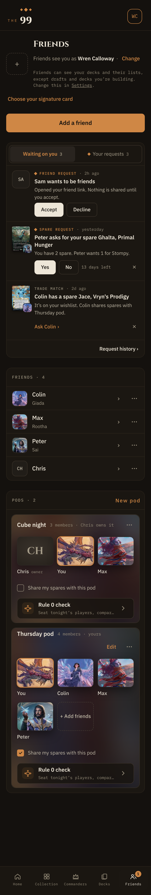
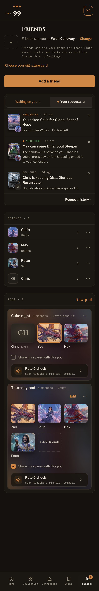
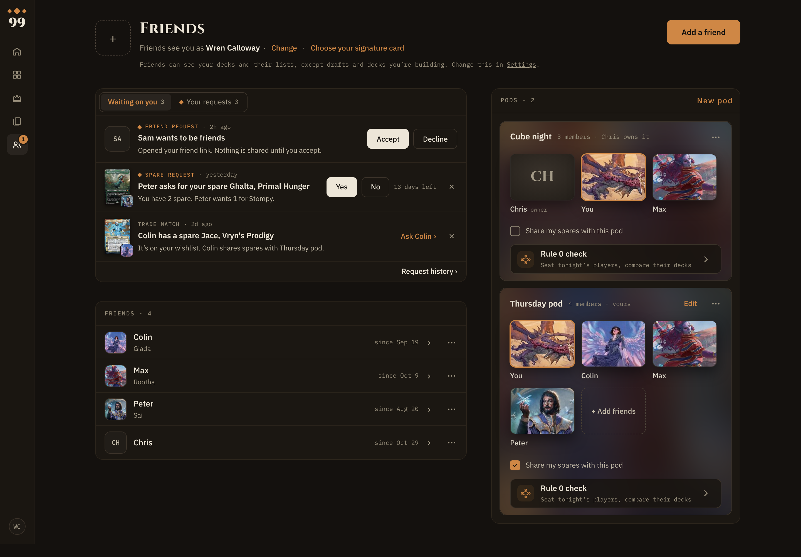

R1d · one Requests box · 390 and 1440
The band holds the shipped segmented switch (compact, filling the band) with each tab’s count. The rows are unchanged. The box opens on Waiting on you when anything waits, else on Your requests. An answer you haven’t seen puts the diamond on Your requests’ tab, so it isn’t hidden. Request history moves to the box’s foot, since it covers both sides. Back to one left column on desktop: Requests, then Friends; Pods on the right.
R1 · Waiting on you tab, phone

Friends now starts after one list, not two. Pods follows it.
R2 · Your requests tab, phone

Same rows, ✕ and Ask again as today. An empty tab shows the small handover mark and one line.
D3 · desktop, 1440

Left: Requests, then Friends (about 545px down, above the fold). Right: Pods, at 448 so three seats fit. This retires R1c’s move of Your requests to the right column.